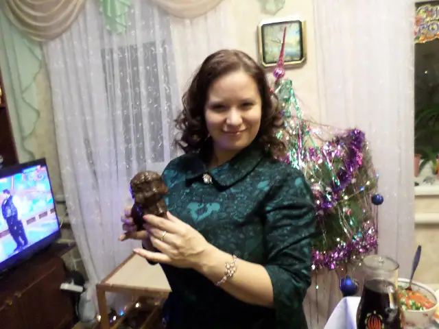

Главная
Галерея
Источники
🧣 Вязание- стиль Жизни
🧶 Школа "РИККОНА" Н.Котельниковой
🧦 Канал Татьяны Беликовой
1 / 5
2 / 5

3 / 5
4 / 5
5 / 5
5 / 5
❮
❯